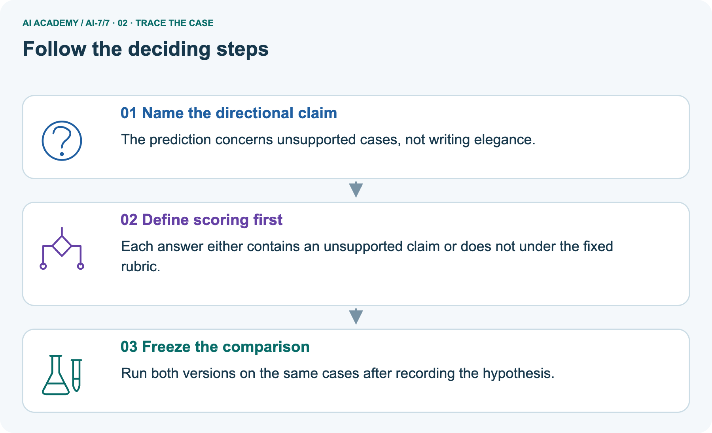
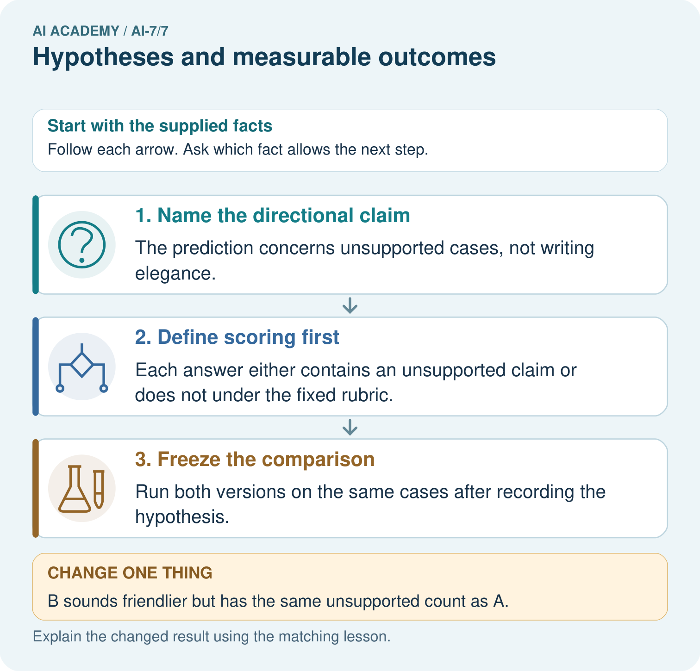
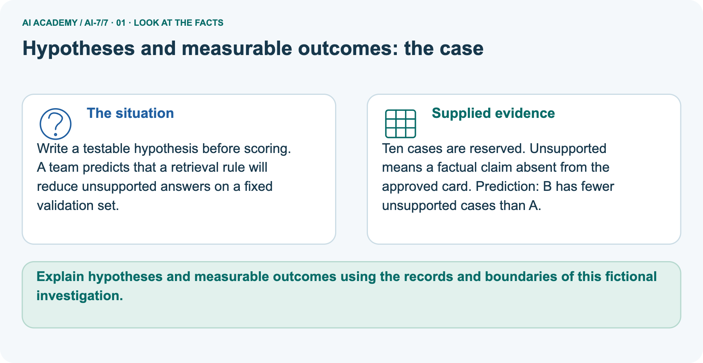
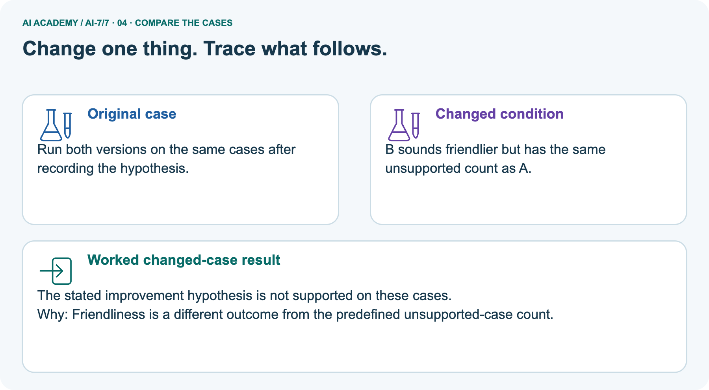
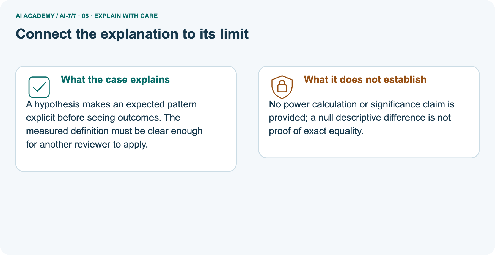
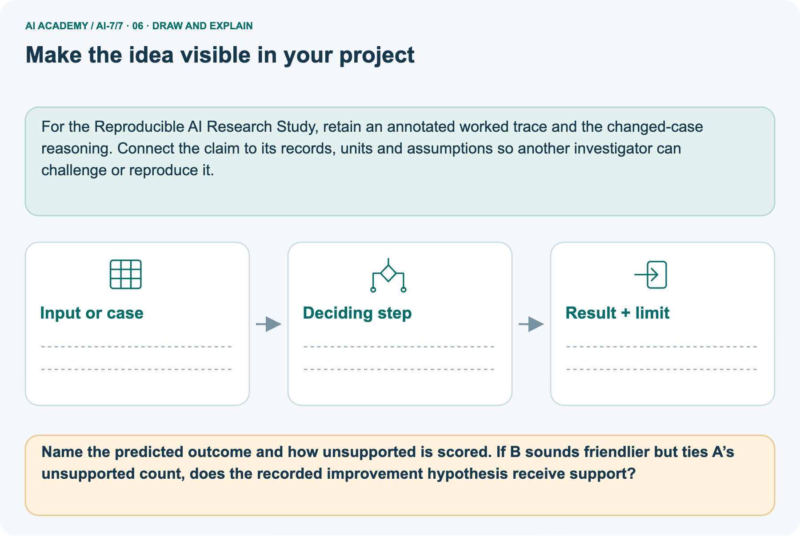

AI Academy · Level 7 · Grade 12 · Week 7 · Teacher guide
Hypotheses and measurable outcomes
Learn to understand, design, build, test and explain AI systems responsibly.
Project: Reproducible AI Research Study
THE CONNECTED WEEK
Ask what was predicted before results and which metric the result actually improves.
Teach transparent outcome plans without rewarding abstention as support or implying statistical proof.
Keep one habit: Model outcome switch → inspect failure categories → compare primary tie and faster secondary → assess twelve-case metric → retain original plan/history.
Main lesson · Section 1
Prepare the connected research investigation
Keep modelling, shared practice and independent evidence distinct.
Target and main teaching plan
Primary target: Explain the mechanism and terminology of hypotheses and measurable outcomes
| Session | Sequence and minutes | Resources |
|---|---|---|
| Session 1 · Understand · 45 min | 0–7: recall and prerequisite; 7–15: inspect the concrete case and predict; 15–30: teacher models the worked trace; 30–40: learners explain a step using the text and visual; 40–45: check the core idea. | Use Your mission, Notice the evidence, See how it works, Words that unlock the idea and Follow a worked example; record the brief recall in the workbook. |
| Session 2 · Practise · 45 min | 0–5: retrieve the procedure; 5–15: W2 completion practice; 15–23: explain and check with a partner; 23–30: each learner answers the misconception check; 30–40: targeted reteaching or a harder variation; 40–45: prepare the investigation. | Use Find and repair a mistake, Practise together and Run the investigation, with workbook W2 and Individual reasoning check. |
| Session 3 · Investigate and transfer · 45 min | 0–5: retrieve the decision rule; 5–20: investigate or trace; 20–30: start the independent case; 30–38: connect the project; 38–43: act on feedback; 43–45: plan the return check. | Use Run the investigation, Build your understanding, Connect your project and Show what you know. Reserve further time for the full task set. Use a code example only where one is actually supplied. |
This is a starting allocation of 135 minutes, not a validated duration. Preserve all named topics. Schedule extra time for connected examples, the full investigation, independent cases and project building.
Repeated copies of a case share one recorded attempt; they are not new evidence.
Preparation and prerequisite
Lesson and workbook; paper and pencil
Calculator and optional local Python 3 for arithmetic; no live API or private data
Prepare the fresh retry separately and withhold its solution until after collection
A result depends on the inputs, procedure and conditions that produced it. Preserve data roles and distinguish observed outcomes from predictions or unmeasured conditions.
If the prior concept cannot be explained, use a short retrieval activity before this chapter.
Opening retrieval
Without opening the old lesson, explain one key idea from A literature comparison matrix. Give an example and a mistake that the idea helps you avoid.
Look for: Explain the mechanism and terminology of a literature comparison matrix
Reference example, not the only acceptable wording: Teacher explanation: A literature matrix compares studies using aligned columns rather than sorting headline numbers with different meanings.
Record question, data, unit, baseline, metric, split, resources and limitations. Mark incomparable fields rather than forcing a ranking.
Without opening the old lesson, explain one key idea from Methods results and limitations. Give an example and a mistake that the idea helps you avoid.
Look for: Explain the mechanism and terminology of methods results and limitations
Reference example, not the only acceptable wording: Teacher explanation: Methods state what was done; results state observed outcomes; limitations state restrictions on interpretation. Mixing them hides missing evidence.
Classify each statement by role and link results to the procedure and denominator. A proposed mechanism is an explanation to test, not an extra observation.
Without opening the old lesson, explain one key idea from A question that evidence can answer. Give an example and a mistake that the idea helps you avoid.
Look for: Explain the mechanism and terminology of a question that evidence can answer
Reference example, not the only acceptable wording: Teacher explanation: A research question identifies an outcome, comparison and conditions that evidence could answer. A broad aspiration needs narrowing before a study.
For fictional classroom retrieval, ask whether method B returns more relevant records than lexical baseline A on a reserved judged query set at cutoff3. Define eligible corpus and relevance rules before running.
Pictured end goal
Explain hypotheses and measurable outcomes using the records and boundaries of this fictional investigation.
Earlier wording, alternatives and picture transcripts
Teach the learning cycle
Retrieval answer guidance
A literature comparison matrix
Methods results and limitations
A question that evidence can answer
Compact alternative: two 45-minute sessions for the core explanation and W1–W5 only. The main plan uses three sessions; schedule further time for the complete investigation, project, visual journey and any code examples. A hypothesis predicts a measurable comparison under stated conditions. Declare primary outcome and direction before inspecting results.
Use the supplied constructed scenarios to make the mechanism inspectable. Collect W4 before sharing solutions.
Students should name intermediate evidence and limitations; classroom pacing and learning effectiveness remain unvalidated.
Outcomes
Explain the mechanism and terminology of hypotheses and measurable outcomes
Apply the stated procedure to a new case with a traceable result
Identify an assumption or limitation and design a revealing follow-up
Preparation
Prerequisite answer
End goal for the pictorial case
This added worked case illustrates the week’s main idea. Retain all original and connected topics; schedule its practice within the teaching cycle.
Main lesson · Section 2
Teach directional predictions, failure rules and transparent revisions
Separate main support, picture unsupported count and unmeasured appealing qualities.
Definitions and complete toy outcome-plan contract
A hypothesis predicts a measurable comparison under stated conditions. Declare primary outcome and direction before inspecting results.
Toy hypothesis: method B improves supported-answer rate over baseline A on a reserved paired set. Define support rubric and failure treatment; record secondary outcomes separately.
| Outcome-plan item | Complete fictional classroom rule |
|---|---|
| Main directional hypothesis | B supported-answer rate exceeds A on the same planned cases |
| Primary metric | Supported completed answers / all planned eligible cases |
| Support rubric | Substantive answer agrees with approved source under the fixed rubric; no unsupported factual claim |
| Failure treatment | Unsupported, abstention and timeout remain in denominator and do not count as supported answers |
| Secondary outcomes | Supplied mean duration, unsupported count, abstentions and timeouts, recorded separately |
| Post-result change | Speed headline chosen after inspecting results is exploratory; original primary remains visible |
| Separate picture | Ten reserved cases in the scenario; prediction B has fewer unsupported cases, defined by absent-from-card factual claims |
| Abstention caution | No unsupported factual claim does not automatically mean a supported useful answer; retain answer coverage |
| Scope | Local plan and constructed practice, not actual preregistration, reserved study, power calculation or significance claim |
Main ordered ledger and checked reasoning
| Main ordered record | Meaning | Honest reporting |
|---|---|---|
| Before inspecting results | Primary is supported-answer improvement B>A | Record cases, versions, rubric and failure/denominator rule |
| After seeing faster responses | New information concerns latency | Report the observed speed result with its measurement conditions |
| Team switches its primary claim to speed | Outcome chosen after results | Label exploratory/post-result revision; retain original hypothesis |
| Support result not supplied by the short scenario | Cannot infer whether the original primary improved | Request/report it rather than replacing it |
| Future confirmatory comparison | New plan and genuinely reserved eligible cases needed | Do not rebrand already revealed practice as unseen testing |
Main support-primary plan must stay visible when speed looks better; label the post-result speed claim exploratory. Added six-case practice supports 4/6 for both, B faster 3→2 seconds but more abstention, so primary strict improvement not observed. Picture ten-case unsupported-count tie is not rescued by friendliness; no population equality or significance follows.
Unsupported absence is not automatically a supported useful answer. Keep fixed failure treatment/denominator. Code plan ordering is not a real preregistration or actual reserved study. Selected twelve-case metric is supported cases/12 under the fixed rubric; equal or lower B support fails the strict sample expectation without proving a broad null/equality claim.
Hypotheses and measurable outcomes — evidence trace
Guided: Report the change as exploratory/post-result revision. Preserve the original support hypothesis; do not present speed as the prespecified primary outcome.
Qualification: A hypothesis can fail honestly; changing it after results does not erase the original test.
Exit: accept a concrete variation with its predicted outcome and a stated condition that would challenge the mechanism; reject a claim resting on unmeasured evidence.
After seeing faster responses, the team changes its primary claim from support improvement to speed improvement.
Report the change as exploratory/post-result revision. Preserve the original support hypothesis; do not present speed as the prespecified primary outcome.
Compare the intermediate evidence with the final statement. Explain why each number or decision follows from the stated inputs.
The conclusion belongs to this scenario and procedure; changing the inputs, evaluation population or authority can change what it establishes. Retain the raw record so a later revision can be compared honestly.
Outcome switching, coverage and inference probes
| Hypothesis probe | Expected interpretation |
|---|---|
| B strictly exceeds A on recorded primary | Observed sample pattern meets that directional expectation |
| B ties or falls below A | Strict improvement not observed in sample; no population-equality proof |
| B faster after primary support was fixed | Report speed separately; post-result new claim is exploratory |
| Unsupported count falls via abstention | May not improve supported-answer rate; report coverage |
| Timeout removed from denominator after results | Changes the declared rule; retain failure or disclose deviation |
| Friendlier wording without fixed score | Not evidence of the stated unsupported-count improvement |
| Plan appears before fixture evaluation in code | Ordered teaching example, not externally registered real study |
| Known practice cases scored again | Regression/replay evidence, not unseen reserved evaluation |
| No power or statistical test supplied | Do not claim significance, equivalence or adequate precision |
Separate ten-case design and added six-case practice
Write a testable hypothesis before scoring. A team predicts that a retrieval rule will reduce unsupported answers on a fixed validation set.
Ten cases are reserved. Unsupported means a factual claim absent from the approved card. Prediction: B has fewer unsupported cases than A.
The picture describes a separate ten-case hypothesis: B should have fewer cases containing a factual claim absent from the approved card. Score that rule on the same cases after fixing the plan. In the changed scenario, B sounds friendlier but ties A’s unsupported count; the strict descriptive reduction prediction is not met in that sample.
Added practice can illustrate a tie of two unsupported cases each, but that number is constructed, not an actual reserved-run result. Friendliness has no supplied primary rubric. Equal sample counts do not prove population equality or absence of any effect. Because abstention can reduce unsupported claims without answering, record answer coverage and abstentions too.
| Added main practice: six paired cases | A | B | Primary interpretation |
|---|---|---|---|
| Supported completed answers | 4 | 4 | Both 4/6 =2/3; strict improvement not observed |
| Unsupported cases | 1 | 0 | Fewer B unsupported does not add a supported answer |
| Abstentions | 0 | 1 | B has one additional abstention |
| Timeouts | 1 | 1 | Keep in the fixed six-case denominator |
| Supplied mean final-outcome duration | 3 seconds | 2 seconds | B faster on this toy timing measure; separate from primary support |
| Evidence status | Constructed records | Constructed records | No actual model, participant or reserved experiment |
Picture trace and friendlier-tie key



Read the picture one step at a time
A hypothesis makes an expected pattern explicit before seeing outcomes. The measured definition must be clear enough for another reviewer to apply.
No power calculation or significance claim is provided; a null descriptive difference is not proof of exact equality.
Change: B sounds friendlier but has the same unsupported count as A.
Prediction: The stated improvement hypothesis is not supported on these cases.
Reason: Friendliness is a different outcome from the predefined unsupported-case count.
Earlier wording, alternatives and picture transcripts
Begin by writing the question the procedure is intended to answer. Identify the information already supplied, the information it will produce and the information still missing.
These are constructed classroom examples; they do not require live accounts, private records or an external service. Do not treat a plausible explanation as a measured outcome.
Before applying the procedure, write its units, denominator or decision boundary where relevant. A partner should be able to repeat each step using the same inputs.
If a required input is absent or violates the stated contract, record that condition explicitly instead of quietly replacing it with a convenient value.
| Term | Meaning |
|---|---|
| Hypothesis | A stated expectation to test |
| Primary outcome | The prespecified main measure |
| Exploratory result | An observation or analysis chosen after seeing evidence |
Model the reasoning aloud
Use the complete worked example below before asking learners to complete W2. Reveal a small part, invite a prediction, then explain the deciding step.
These teacher notes contain solutions; do not reveal the independent case answer during modelling.
| Thinking move | Teacher prompt |
|---|---|
| Plan | What is given? What is the question? Which procedure fits these facts? |
| Do | Point to each input and intermediate step in the worked trace. Name the rule that allows the next step. |
| Check | Does the output answer the question? Which assumption or limitation prevents a larger claim? |
Use the diagram and verbal explanation together. Ask learners to match a sentence to a specific visual step; do not assign learners fixed visual or auditory learning styles.
A pictorial worked case: Hypotheses and measurable outcomes
The facts we will use



Why this result follows
What this example does not establish
Change one thing in the pictured case
Ask while showing the picture
Cover the result. Ask learners to name the inputs and predict the next step. Uncover one step, connect the icon to the actual procedure, and explain its evidence. Then change the supplied condition and compare.
The picture is a representation; it does not document execution of a real AI model.
Main lesson · Section 3
Model a step,then remove help
Collect each learner’s reasoning before showing a key.
Current completion task and checked reasoning
Completion task: After seeing faster responses, the team changes its primary claim from support improvement to speed improvement. Show the intermediate steps and give the conclusion with its scope.
Teacher check: Teacher explanation: Report the change as exploratory/post-result revision. Preserve the original support hypothesis; do not present speed as the prespecified primary outcome.
Start by identifying the given inputs together. Leave the intermediate steps blank. If needed, model one step, then withdraw that help on the next step. Move to a full trace only when the partial trace is understood.
For partners, alternate explainer and checker; collect a response from every learner before discussion.
Individual misconception check
Use the worked case for Hypotheses and measurable outcomes. Proposed explanation: “The worked result establishes every future case”. Decide whether this explanation is supported.
Point to the step or supplied fact that decides; explain your repair if needed.
Expected correction: A hypothesis can fail honestly; changing it after results does not erase the original test.
Collect explanations, not only yes/no votes. If a misunderstanding is common, re-model the relevant step for the class.
If it affects a few learners, give a short targeted group explanation while others solve a more demanding variation.
Pictured reasoning and changed case
Name the predicted outcome and how unsupported is scored. If B sounds friendlier but ties A’s unsupported count, does the recorded improvement hypothesis receive support?
The prediction concerns unsupported cases, not writing elegance. Each answer either contains an unsupported claim or does not under the fixed rubric. Run both versions on the same cases after recording the hypothesis.
Changed case: The stated improvement hypothesis is not supported on these cases. Friendliness is a different outcome from the predefined unsupported-case count.
Changed-case reasoning: The stated improvement hypothesis is not supported on these cases. Friendliness is a different outcome from the predefined unsupported-case count.
Collect each learner’s explanation before discussion. Use the first missing connection between input, deciding step and result to choose support. This question is worked-case practice, not fresh mastery evidence.
Accessible support and extension
Use the worked example in Sections 3 and 6. Collect a prediction before revealing its result; ask the learner to point to each intermediate fact.
Provide an input/procedure/result/limit frame and a calculator when needed. Ask students to identify the first step before completing the whole trace.
Extension: compare two concrete variants of this mechanism while holding unrelated conditions fixed; report both successful and unsuccessful outcomes.
Earlier wording, alternatives and picture transcripts
| Time or stage | Teacher action |
|---|---|
| Session 1: 0–7 minutes | Retrieve the prerequisite; identify the input, procedure and evidence source. |
| 7–18 minutes | Explain See how it works and Words that unlock the idea. Complete W1 with a mechanism-based explanation. |
| 18–32 minutes | Trace the declared procedure and worked case. Complete W2, recording intermediate steps. |
| 32–45 minutes | Discuss the diagram with the worked input; use W3 to distinguish measured claims and limitations. |
| Session 2: 0–8 minutes | Retrieve the worked reasoning and collect the guided response before discussing it. |
| 8–20 minutes | Compare a proposed boundary variant with the original case; identify what remains fixed. |
| 20–35 minutes | Collect W4 independently. Require the procedure trace and the bounded conclusion. |
| 35–45 minutes | Use W5 and exit responses for feedback. Administer the fresh retry after feedback and preserve both attempts. |
Reduce help deliberately
Individual reasoning check
Pictorial practice question
Reasoned teacher answer
Main lesson · Section 4
Run the complete supplied investigation
Separate predictions,actual runs and paper traces.
Complete inputs,expected results and limits
Main speed improvement after results does not become the original support primary; preserve and disclose exploratory revision. Added six-case support tie with speed difference and changed abstention shows distinct outcomes. Picture friendlier/tied unsupported count fails strict sample reduction, without population-equality proof.
Selected twelve cases use supported cases/12 under fixed rubric; equal or lower B contradicts strict-improvement expectation in that sample. Retain failures and do not invent significance, power or real preregistration.
Diagnose the current misconceptions
The worked result establishes every future case: A hypothesis can fail honestly; changing it after results does not erase the original test.
A missing input may be replaced without recording the change: A replacement changes the evidence or contract. Record the change and its justification; do not silently turn unknown into a measured value.
Repeating an assessed case is new independent evidence: A replay checks consistency. An example used for feedback or revision cannot later be described as untouched final evaluation.
Use Section 9 for the evidence ledger. Add a boundary or missing-input case and record the expected response before checking. More successful repeats of one case do not establish wider coverage.
Choose accessible support
| What the response shows | Next teaching action |
|---|---|
| Missing or misread facts | Read the case aloud, mark supplied versus unknown facts, and let the learner restate it. |
| Wrong procedure | Return to the deciding step in the worked case. Contrast it with the proposed incorrect explanation. |
| Arithmetic or implementation error | Trace intermediate values or lines; preserve the first mismatch and retry that step. |
| Correct result without a reason | Ask for a trace and a changed case before marking independent understanding. |
| An unsupported wider claim | Ask which supplied evidence supports the claim and which further observation would be needed. |
Offer an oral explanation, drawing, enlarged visual or fewer examples when that removes a reading/writing barrier. Keep the same reasoning goal.
Stretch secure learners by changing a boundary or assumption and asking them to defend the effect, not simply by assigning more of the same questions.
Earlier wording, alternatives and picture transcripts
Match the support to the first error
Main lesson · Section 5
Assess the new research scenario
Keep the selected answer private until after a first attempt.
Selected independent task and checked answer
Selected case: Before running 12 cases, you expect B support to exceed A. Write primary metric and one falsifying result.
Teacher explanation: Primary metric is supported cases/12 under the fixed rubric. Equal or lower B support contradicts the strict-improvement expectation in this sample.
Judge explanation,trace and limits
| Dimension | Evidence required |
|---|---|
| Explanation | Names the applicable idea or procedure and ties it to the supplied facts. |
| Trace and result | Preserves the given inputs and shows the relevant intermediate steps; distinguishes a prediction from an observed execution. |
| Limits | States the assumptions, missing evidence or conditions under which the result would change. |
Record each dimension as not yet, with support, or independent. Accept a valid alternative procedure with a defensible trace.
Do not penalise an honestly recorded model failure if the learner correctly explains its evidence and limits.
Give one usable repair
Name the earliest unsupported step and give one action to repair it. Have the learner make that repair now and explain why. Then assess the relevant skill on a fresh, fully specified case.
Confirm it was not previously practised with feedback; solve and check the new case before assigning it. A follow-up design prompt is a starting brief, not automatically an equivalent test.
W1 Explain the mechanism
Explain the weekly mechanism in your own words. Use the worked scenario to name its input, decision rule and output.
Teacher explanation: A hypothesis predicts a measurable comparison under stated conditions. Declare primary outcome and direction before inspecting results. Toy hypothesis: method B improves supported-answer rate over baseline A on a reserved paired set. Define support rubric and failure treatment; record secondary outcomes separately.
W2 Trace the worked case
After seeing faster responses, the team changes its primary claim from support improvement to speed improvement. Show the intermediate steps and give the conclusion with its scope.
Teacher explanation: Report the change as exploratory/post-result revision. Preserve the original support hypothesis; do not present speed as the prespecified primary outcome.
W3 Audit the limit
A report omits this qualification: A hypothesis can fail honestly; changing it after results does not erase the original test. Explain how omitting it could change a reader's interpretation, and write an accurate replacement.
Teacher explanation: A hypothesis can fail honestly; changing it after results does not erase the original test.
State the observed result separately from the unverified or out-of-scope claim; preserve the original evidence rather than inventing a missing fact.
W5 Design a revealing follow-up
For the worked scenario, propose one additional case that could reveal a failure, describe its expected outcome before running it, and explain what would need to remain fixed for a fair comparison.
Do not reuse W4 as a new final test after receiving feedback.
Teacher explanation: Accept a concrete variant of the worked input or a missing/conflicting/boundary condition, with an expectation derived from the declared procedure.
Require preserved settings, original outputs and data roles. A hypothesis can fail honestly; changing it after results does not erase the original test.
The new case should test this particular mechanism rather than merely restate the original result.
Earlier wording, alternatives and picture transcripts
Guided and exit questions
Guided: Report the change as exploratory/post-result revision. Preserve the original support hypothesis; do not present speed as the prespecified primary outcome.
Qualification: A hypothesis can fail honestly; changing it after results does not erase the original test.
Exit: accept a concrete variation with its predicted outcome and a stated condition that would challenge the mechanism; reject a claim resting on unmeasured evidence.
W1 Explain the mechanism
W2 Trace the worked case
W3 Audit the limit
W4 Apply a new case independently
Before running 12 cases, you expect B support to exceed A. Write primary metric and one falsifying result.
Teacher explanation: Primary metric is supported cases/12 under the fixed rubric. Equal or lower B support contradicts the strict-improvement expectation in this sample.
W5 Design a revealing follow-up
Independent assessment and fresh retry
W4: Primary metric is supported cases/12 under the fixed rubric. Equal or lower B support contradicts the strict-improvement expectation in this sample. Require intermediate reasoning and the stated scope.
Fresh retry: Hypothesis says lower MSE on ten final rows. Expected reasoning: Declare same-row MSE comparison; equal or higher MSE fails strict improvement. A failed hypothesis is still reportable evidence.
If students need support, record it and reassess with another new case rather than awarding independence to a copied answer.
Assess independent transfer
Selected case answer
Feedback that the learner uses
Main lesson · Section 6
Connect, support and revisit research reasoning
Use saved evidence and assumptions to choose the next question.
Project and next-week bridge
Add a labelled hypotheses and measurable outcomes evidence sheet to Reproducible AI Research Study. Show how you can explain the mechanism and terminology of hypotheses and measurable outcomes.
Use the supplied fictional case and keep its inputs, intermediate steps, calculation or prediction, and limitation. Connect this record to last week’s record; a matching answer without a trace is insufficient.
Provide an input/procedure/result/limit frame and a calculator when needed. Ask students to identify the first step before completing the whole trace.
Extension: compare two concrete variants of this mechanism while holding unrelated conditions fixed; report both successful and unsuccessful outcomes.
Next connection: Baselines and fair comparisons. Preserve the current case record and retrieve its evidence boundary before moving on.
Retain the project ledger and assess a changed case after support. Check the relevant prerequisite before carrying this component forward.
For the Reproducible AI Research Study, retain an annotated worked trace and the changed-case reasoning. Connect the claim to its records, units and assumptions so another investigator can challenge or reproduce it.
Delayed return and support record
Suggested return points in this level: ai-7/8, ai-7/10, ai-7/13. Use actual classroom dates, adjusting for holidays and gaps. One, three and six teaching weeks are scheduling choices, not a claimed optimal spacing.
At a delayed check, ask for the idea from memory and a changed application. Compare with the earlier independent response and record support used.
For a new level, revisit the previous capstone before checking the new prerequisites.
| Record | Teacher evidence |
|---|---|
| Learner code and date | |
| Concept and case used; prior exposure | |
| Explanation / trace / limits | |
| Support and first repair | |
| Changed case and delayed outcome | |
| Next teaching action |
Use the evidence to choose reteaching or the next step. A completed page, confidence rating or attractive project does not by itself demonstrate understanding.
Earlier wording, alternatives and picture transcripts
Plan the delayed return
Project evidence from this case
Reference bank and extra practice
Choose the reference that helps your next step.
Reference · Alternative planning checklist
Reference · Section 7
Reference · Alternative planning checklist
Use alongside the main route when helpful.
Planning,assessment and project reminders
Teaching target: Explain the mechanism and terminology of hypotheses and measurable outcomes
Prepare the labelled worked-case picture, the matching workbook, fictional input cards and a place for individual responses. Check a local Python 3 environment before class; have a paper-trace version ready.
| Session | Plan | Resources |
|---|---|---|
| Session 1 · Understand · 45 min | 0–7: recall and prerequisite; 7–15: inspect the concrete case and predict; 15–30: teacher models the worked trace; 30–40: learners explain a step using the text and visual; 40–45: check the core idea. | Use Your mission, Notice the evidence, See how it works, Words that unlock the idea and Follow a worked example; record the brief recall in the workbook. |
| Session 2 · Practise · 45 min | 0–5: retrieve the procedure; 5–15: W2 completion practice; 15–23: explain and check with a partner; 23–30: each learner answers the misconception check; 30–40: targeted reteaching or a harder variation; 40–45: prepare the investigation. | Use Find and repair a mistake, Practise together and Run the investigation, with workbook W2 and Individual reasoning check. |
| Session 3 · Investigate and transfer · 45 min | 0–5: retrieve the decision rule; 5–20: investigate or trace; 20–30: start the independent case; 30–38: connect the project; 38–43: act on feedback; 43–45: plan the return check. | Use Run the investigation, Build your understanding, Connect your project and Show what you know. Reserve further time for the full task set. Use a code example only where one is actually supplied. |
Before class, solve the supported practice: After seeing faster responses, the team changes its primary claim from support improvement to speed improvement. Show the intermediate steps and give the conclusion with its scope.
Reasoned practice answer: Teacher explanation: Report the change as exploratory/post-result revision. Preserve the original support hypothesis; do not present speed as the prespecified primary outcome.
Check every learner before discussion: Use the worked case for Hypotheses and measurable outcomes. Proposed explanation: “The worked result establishes every future case”. Decide whether this explanation is supported.
Point to the step or supplied fact that decides; explain your repair if needed.
Misconception repair: A hypothesis can fail honestly; changing it after results does not erase the original test.
Support: read the exact case aloud, enlarge the labelled picture, supply input cards and model only the first deciding step. Accept a spoken explanation or drawing; retain the reasoning goal.
Extension: B sounds friendlier but has the same unsupported count as A. Require a prediction and a reason before comparing. Expected result: The stated improvement hypothesis is not supported on these cases.
Reason: Friendliness is a different outcome from the predefined unsupported-case count.
Independent assessment: withhold the reserved answer until the learner has attempted the new case. Record support separately from correctness.
| Criterion | Not yet | With support | Independent |
|---|---|---|---|
| Explanation | Names an answer without a deciding fact | Uses a hint to link fact and decision | Explains the deciding fact in own words |
| Trace or test | Cannot connect input and result | Completes steps with prompts | Traces or tests a changed case accurately |
| Limits and revision | Claims more than evidence supports | Names a limit after a prompt | States a defensible limit and useful next test |
Project checkpoint: Make a transparent first version. Keep a trace of how one input becomes an output; explain the rule or learned component.
Use the weekly teacher answer for topic-specific reasoning. A saved progress tick is an activity record; judge mastery from the learner’s explanation and evidence.
Reference · Feedback,labs and repair paths
Reference · Section 8
Reference · Feedback,labs and repair paths
Retain the first attempt and the evidence used for a repair.
Feedback and record guidance
Use the two formative questions as supported practice, not as independent mastery scores. Discuss the deciding evidence rather than accepting a guessed selection.
The feedback comes from the reviewed public worked case. Do not reveal the separately reserved independent teacher answer until the learner has attempted that case.
This week has no code block. Use this routine when a later lesson includes an executable lab.
Ask students to predict before running code. Preserve errors and actual outputs; collect a changed test and an explanation. The branch-boundary and indexing lessons deliberately include failure cases.
Use the earlier worked-explanation links to address a specific missing building block, then return to the current question. Adapt this suggestion after observing the learner; it is not an automatic diagnosis.
Collect the completed-work portfolio as evidence. Record support separately from correctness, and assess explanation, trace/test and limitations. Progress ticks and quiz selections alone do not establish mastery.
Reference · Teach with the six pictures
Reference · Section 9
Reference · Teach with the six pictures
Choose one picture for a particular reasoning move.
01. Hypotheses and measurable outcomes: the case



Write a testable hypothesis before scoring. A team predicts that a retrieval rule will reduce unsupported answers on a fixed validation set. Supplied facts: Ten cases are reserved.
Unsupported means a factual claim absent from the approved card. Prediction: B has fewer unsupported cases than A.
Point to the given fact that matters most. Explain why it matters.
Teacher prompt: Point to the given fact that matters most. Explain why it matters. Ask learners to describe one label or arrow in ordinary words. Use the adjacent transcript if the image is difficult to see.
02. Follow the deciding steps
Name the directional claim: The prediction concerns unsupported cases, not writing elegance. → Define scoring first: Each answer either contains an unsupported claim or does not under the fixed rubric. → Freeze the comparison: Run both versions on the same cases after recording the hypothesis.
Point to each numbered stage and explain which recorded input it uses.
Teacher prompt: Point to each numbered stage and explain which recorded input it uses. Ask learners to describe one label or arrow in ordinary words. Use the adjacent transcript if the image is difficult to see.
03. Hypotheses and measurable outcomes — evidence trace
![Hypotheses and measurable outcomes — evidence trace. After seeing faster responses, the team changes its primary claim from support improvement to speed improvement. | Toy hypothesis: method B improves supported-answer rate over baseline A on a reserved paired set. Define support rubric and failure treatment; record secondary outcomes separately. | Report the change as exploratory/post-result revision. Preserve the original support hypothesis; do not present speed as the prespecified primary outcome.](../assets/academy-story-ai-7-7-03.png)

Hypotheses and measurable outcomes — evidence trace. After seeing faster responses, the team changes its primary claim from support improvement to speed improvement. | Toy hypothesis: method B improves supported-answer rate over baseline A on a reserved paired set. Define support rubric and failure treatment; record secondary outcomes separately. | Report the change as exploratory/post-result revision. Preserve the original support hypothesis; do not present speed as the prespecified primary outcome.
Read the labels and values. Explain the relationship the model shows.
Teacher prompt: Read the labels and values. Explain the relationship the model shows. Ask learners to describe one label or arrow in ordinary words. Use the adjacent transcript if the image is difficult to see.
04. Change one thing. Trace what follows.



Original case: Run both versions on the same cases after recording the hypothesis. Changed condition: B sounds friendlier but has the same unsupported count as A.
Expected result: The stated improvement hypothesis is not supported on these cases. Reason: Friendliness is a different outcome from the predefined unsupported-case count.
Predict before checking the worked changed-case result. Name what changed and what the supplied facts allow you to conclude.
Teacher prompt: Predict before checking the worked changed-case result. Name what changed and what the supplied facts allow you to conclude. Ask learners to describe one label or arrow in ordinary words.
Use the adjacent transcript if the image is difficult to see. Changed-case reasoning: Friendliness is a different outcome from the predefined unsupported-case count.
05. Connect the explanation to its limit



A hypothesis makes an expected pattern explicit before seeing outcomes. The measured definition must be clear enough for another reviewer to apply.
Limit: No power calculation or significance claim is provided; a null descriptive difference is not proof of exact equality.
Explain the case, then point to a limit on the claim.
Teacher prompt: Explain the case, then point to a limit on the claim. Ask learners to describe one label or arrow in ordinary words. Use the adjacent transcript if the image is difficult to see.
Keep the stated scope: No power calculation or significance claim is provided; a null descriptive difference is not proof of exact equality.
06. Make the idea visible in your project



For the Reproducible AI Research Study, retain an annotated worked trace and the changed-case reasoning. Connect the claim to its records, units and assumptions so another investigator can challenge or reproduce it.
Draw your input, deciding step, result and limit. Supported question: Name the predicted outcome and how unsupported is scored.
If B sounds friendlier but ties A’s unsupported count, does the recorded improvement hypothesis receive support?
Draw your project trace and justify the deciding step using evidence.
Teacher prompt: Draw your project trace and justify the deciding step using evidence. Ask learners to describe one label or arrow in ordinary words. Use the adjacent transcript if the image is difficult to see.
Supported practice key: The prediction concerns unsupported cases, not writing elegance. Each answer either contains an unsupported claim or does not under the fixed rubric.
Run both versions on the same cases after recording the hypothesis. Changed case: The stated improvement hypothesis is not supported on these cases.
Friendliness is a different outcome from the predefined unsupported-case count.
Earlier wording, alternatives and picture transcripts
Use one picture at a time. Hide a worked result before asking for a prediction, then reveal it for feedback. These are supported teaching cases; retain the separate independent assessment for a fresh first attempt.